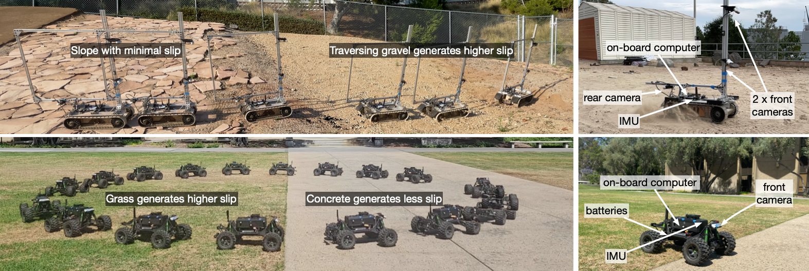

T-RO
Best Paper Nominee, FMNS @ ICRA 2025
Best Poster Runner-up, ROAR @ RSS 2025
MAGICVFM — Meta-learning Adaptation for Ground Interaction Control with Visual Foundation Models
An offline meta-learning algorithm to build a residual dynamics and disturbance model using both Visual Foundation Models (VFM) and vehicle states. Integrated with composite adaptive control to adapt to terrain and vehicle dynamics changes in real time, with mathematical guarantees of stability and robustness.